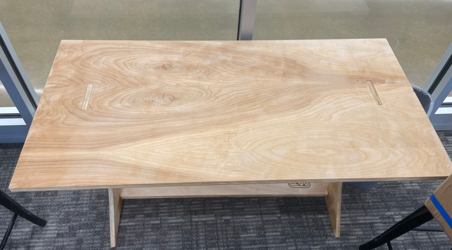
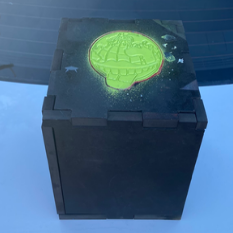
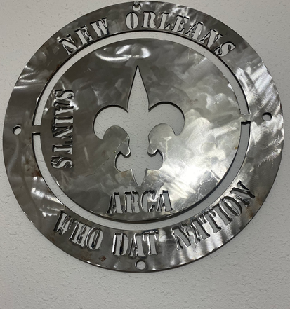
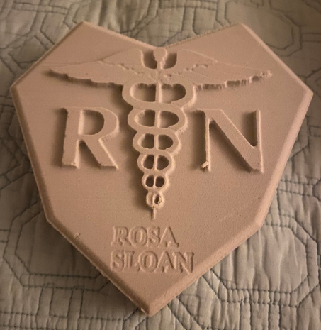
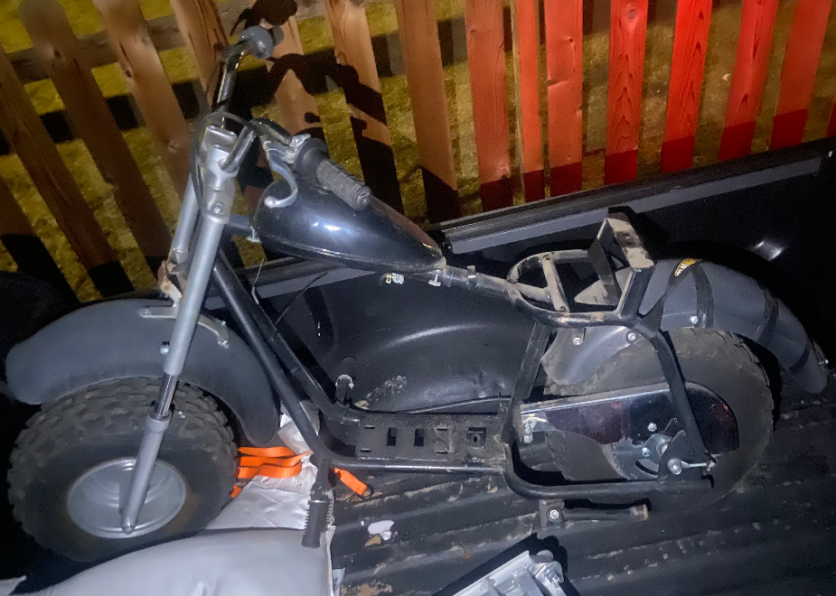
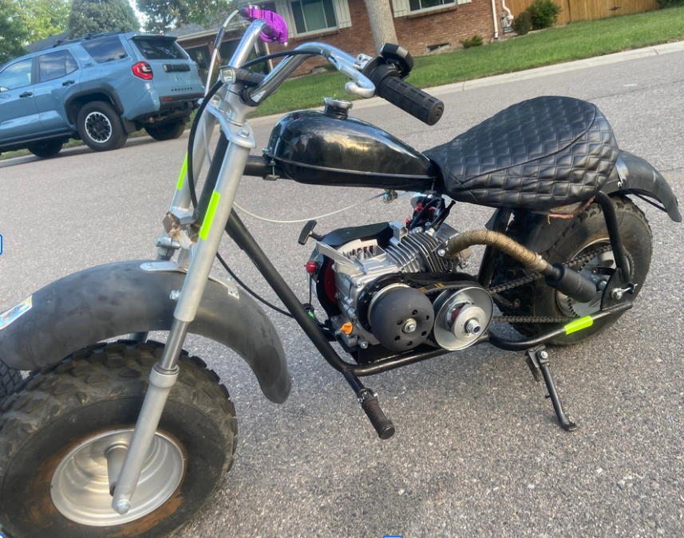

Manufacturing
Wooden table
-
Requirements: Build a piece of furniture from one flat piece of 4x4 of wood. It also needed to have no screws, only fitting by sliding pieces into one another. Also needed to add our schools logo somewhere on the table.
Tools Used: Router, Solidworks, Vcarve

Wooden Box
- Requirments: Build a wooden box that allows each side to fit together without screws. Also allow one side of the box to slide in and out, so that the inside is accsessible.
Tools Used: Router, Solidworks, Vcarve

Metal sign
- Requirements: Build a metal sign with a design in the middle. Add words on both the x and y-axis, while also one or more texts on the circumference of one of the circles. Finally allow it to have holes so it can be hung up
Tools Used: Solidworks, Vcarve, Laser Cutter

Foam Cut-out
- Requirements: Create a foam cut-out with a design in the middle. Has to meet certain height and width requirements.
Tools Used: Router, Solidworks, Vcarve

Mechanical
Mini Bike
- Requirements: Rebuild a mini bike from a frame. Add a new engine, new tires, and new brakes.
Tools Used: Wrenches, Screwdrivers, Pliers, Socket Set, Compact drill

